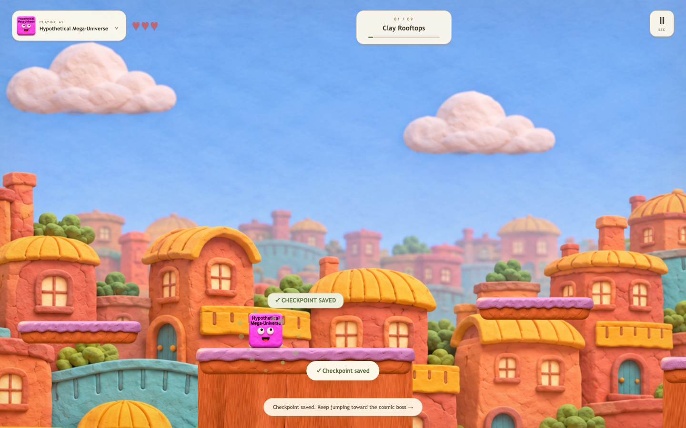
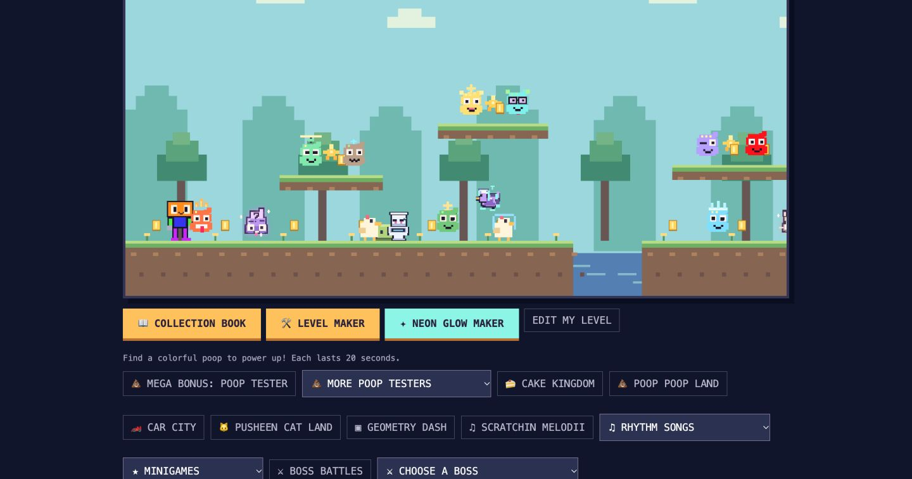
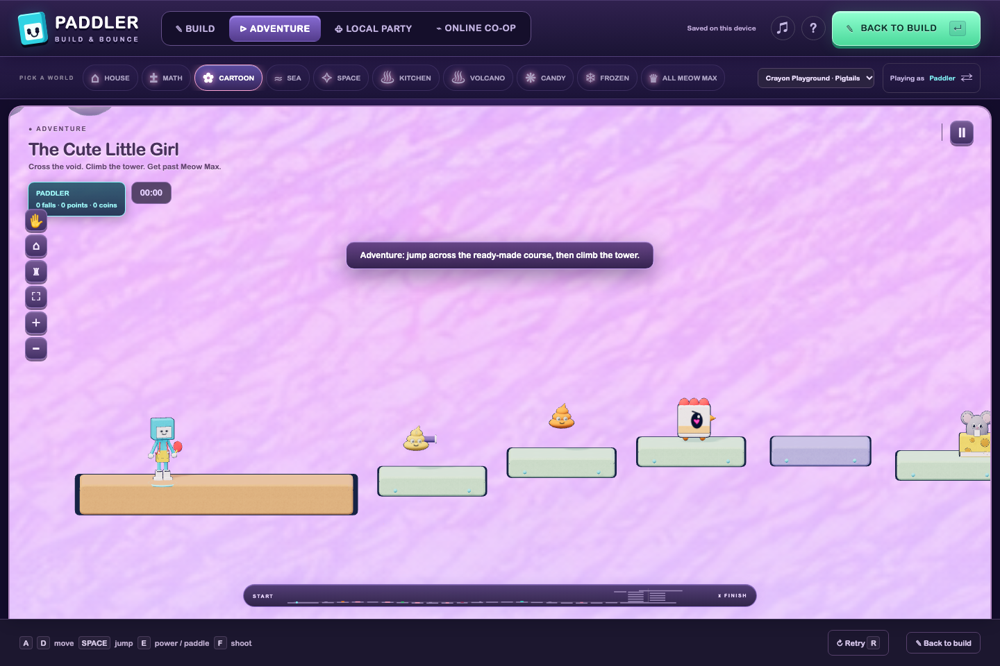
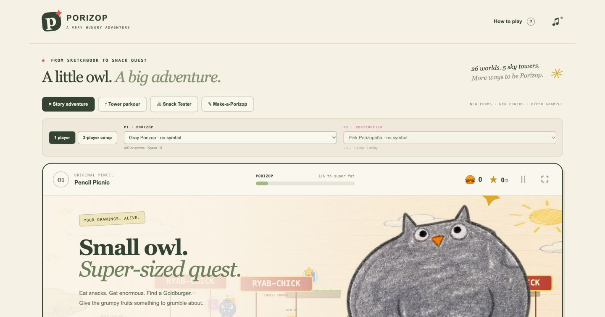
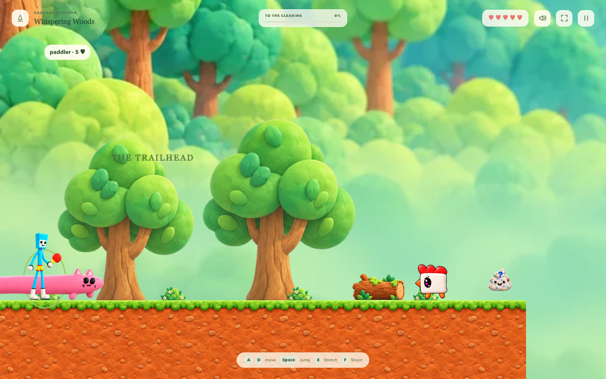
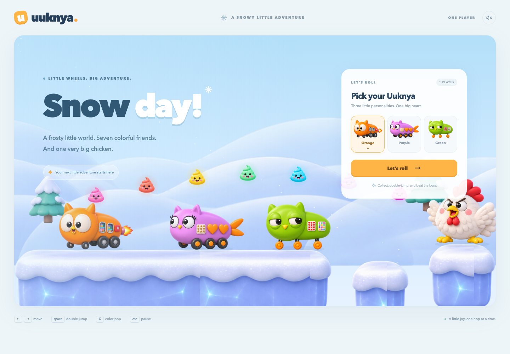

A COLLECTION OF LITTLE ADVENTURES
Big worlds.
Just one click away.
Pick a game and jump in. Explore strange worlds, build something wonderful, or bring a friend along for the ride.
06GAMES TO EXPLORE
Choose your adventure
Play straight in your browser ↗


Porizop · Snack Quest
A hungry little owl, story worlds, parkour towers, local co-op and a drawing studio.
Let's play

Uuknya · Little Worlds
Roll through nine worlds, meet colorful friends and try races and mini-games.
Let's play